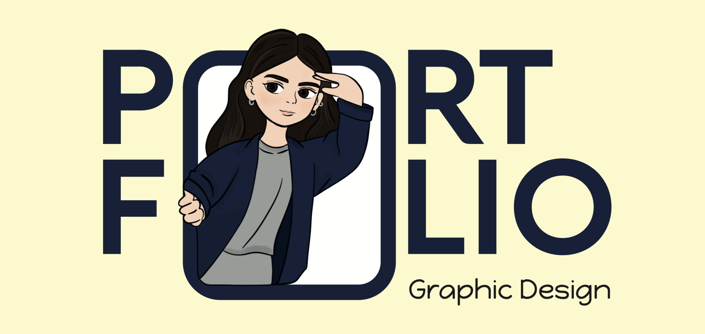

Ciao, benvenuto nel portfolio di Sara!
Sono una persona creativa, curiosa e appassionata di design e tecnologia. Mi piace trasformare idee in progetti concreti, combinando creatività, semplicità e attenzione ai dettagli. Questo portfolio è uno spazio in cui raccolgo i miei lavori, le mie competenze e il mio percorso di crescita. Esplora i miei progetti e scopri cosa posso creare!
Stuck
Il progetto nasce dallo studio psicologico delle relazioni tossiche, intese
non come relazioni conflittuali isolate, ma come sistemi relazionali
disfunzionali basati su pattern ripetitivi che si strutturano nel tempo.
La tossicità non è determinata da singoli episodi, ma dal modo in cui le
interazioni si ripetono e alterano l’
equilibrio tra le parti.
La teoria del
trauma bonding spiega inoltre come l’
alternanza ciclica tra tensione e
riavvicinamento rafforzi il legame invece di indebolirlo.
Queste dinamiche vengono tradotte in una forma astratta:
due linee rappresentano due entità all’interno dello stesso sistema
relazionale.
Le interazioni tra le linee sono manifestazioni visive dei pattern tossici.
L’uso di un linguaggio minimale e non figurativo consente di evitare una
narrazione personale e mantenendo una rappresentazione universale.
La realizzazione avviene attraverso due linee controllate da un
controller MIDI. La narrazione visiva cambia in base alle azioni
degli utenti, che intervengono su parametri come forma,
dimensione e spazio occupato.
Due persone operano simultaneamente sul controller, seguendo il
ritmo di una musica strumentale caratterizzata da un crescendo di
ansia e angoscia.
Il punto più oscuro non è lo scontro, ma la progressiva scomparsa di
una delle due identità, inglobata dall’altra.